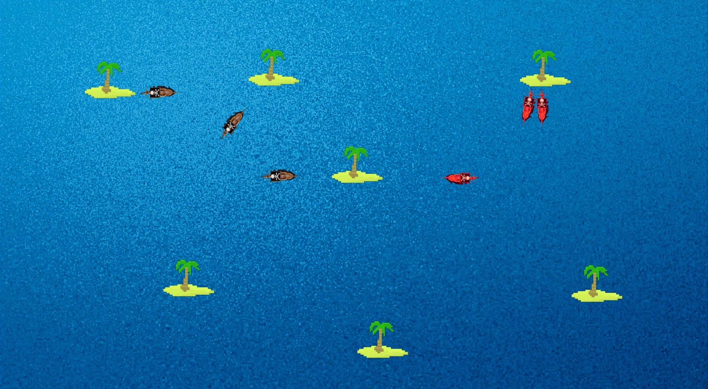

<div class="main-container">
    <div class="title-container">
        <div class="title">
            <!-- the profile links below should be game_data.game_data.winner/loser.userId-->
            <a routerLink="profile/{{game_data.game_data.winner}}">{{game_data.game_data.winner}}</a> DEFEATS <a
                routerLink="profile/{{game_data.game_data.loser}}">{{game_data.game_data.loser}}</a>
        </div>
    </div>
    <div class="line-container">
        <hr class="center-diamond">
    </div>
    <div class="game-container">
        <div id="otherReplays">
            <tr *ngFor="let other of otherGames">
                <div id=testHover>
                    <mat-card
                        (click)="selectReplay('https://tesla-cdn.thron.com/static/A7I6LP_lane_change_0.mp4-2000_PYSUF4.mp4')">
                        <!--WIP on switching videos-->
                        <mat-card-content style="text-align: center;">{{other.winner}} DEFEATS {{other.loser}}
                        </mat-card-content>

                    </mat-card>
                    <br>
                </div>
            </tr>
        </div>
        <div id="GameStats">
            <h1>Game Center</h1>
            <div class="line-container">
                Add stuff for watching games
            </div>
        </div>
        <div class="game-replay">
            <!-- a <canvas> will go here-->
            <!---->
            <video id="myVideo" width="850" #myVideo autoplay [muted]="'muted'">
                <source src={{replayName}} />
                <!--THIS IS A SAMPLE VIDEO JUST FOR TESTING PURPOSES-->
            </video>
        </div>
        <div class="replay-options-container">
            <div class="replay-options">
                <div class="buttons">
                    <button mat-button (click)="skip_previous()">
                        <mat-icon>skip_previous</mat-icon>
                    </button>

                    <button mat-button (click)="changePause()">
                        <mat-icon (click)="myVideo.pause()" *ngIf="play">pause</mat-icon>
                        <mat-icon (click)="myVideo.play()" *ngIf="pause">play_arrow</mat-icon>
                    </button>

                    <button mat-button (click)="skip_next()">
                        <mat-icon>skip_next</mat-icon>
                    </button>
                    <span>0</span>
                    <span class="progress-bar">
                        <mat-slider thumbLabel (change)="sliderEvent($event)" class="slider" min="0"
                            max="{{game_data.game_data.game_length}}" step="1" value="0"></mat-slider>
                    </span>
                    <span>{{game_data.game_data.game_length}}</span>
                </div>

            </div>
        </div>
    </div>
</div>